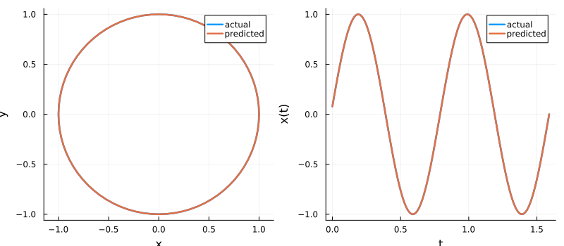

Liquid State Machine: a periodic orbit
LSM is a Liquid State Machine ((Maass et al., 2002)): an LSMCell, optional state_modifiers, and a LinearReadout. The default neuron LIFNeuron is leaky integrate-and-fire, not LIFESN (Local Information Flow).
This tutorial trains an LSM on a 2D periodic orbit and rolls it forward autoregressively. The training and prediction pipeline is the same as for ESN.
Building the dataset
using ReservoirComputing
using LuxCore: setup
using SciMLBase
using DataInterpolations
using OrdinaryDiffEqTsit5
using Plots
using Random
rng = MersenneTwister(42)
dt = 0.01
train_len, predict_len = 400, 160
period = 0.8
t = range(0.0; step = dt, length = train_len + predict_len + 1)
theta = 2 * π .* t ./ period
data = vcat(reshape(sin.(theta), 1, :), reshape(cos.(theta), 1, :))
input_data = data[:, 1:train_len]
target_data = data[:, 2:(train_len + 1)]
seed = data[:, train_len + 1]
test = data[:, (train_len + 2):(train_len + predict_len + 1)]2×160 Matrix{Float64}:
0.0784591 0.156434 0.233445 … -0.156434 -0.0784591 -1.71451e-15
0.996917 0.987688 0.97237 0.987688 0.996917 1.0Constructing the LSM
N_res = 80
init_input_f64(rng, d...) = scaled_rand(rng, Float64, d...)
init_reservoir_f64(rng, d...) = dale_sparse(rng, Float64, d...)
init_state_f64(rng, d...) = zeros(Float64, d...)
lsm_train = LSM(
2, N_res, 2, (0.0, train_len * dt), Tsit5();
feature_map = MembraneVoltageFeature(),
init_input = init_input_f64,
init_reservoir = init_reservoir_f64,
init_state = init_state_f64,
dtmax = 5.0e-4,
reltol = 1.0e-6, abstol = 1.0e-8
)
lsm_pred = LSM(
2, N_res, 2, (0.0, predict_len * dt), Tsit5();
feature_map = MembraneVoltageFeature(),
init_input = init_input_f64,
init_reservoir = init_reservoir_f64,
init_state = init_state_f64,
dtmax = 5.0e-4,
reltol = 1.0e-6, abstol = 1.0e-8
)
ps, st = setup(rng, lsm_train)((reservoir = (input_matrix = [0.04216477346868928 -0.003001968761130325; -0.08710294978033467 0.03683093613113164; … ; 0.03442128264446285 -0.0991847641446523; -0.0332793510974732 -0.07067744089309135], reservoir_matrix = [0.0 0.0 … -0.0 -0.0; 0.0 0.23575827032436414 … -0.12680095865246765 -0.0; … ; 0.0 0.0 … -0.0 -0.0; 0.0 0.0 … -0.0 -0.0]), state_modifiers = (), readout = (weight = Float32[0.35314357 0.6096883 … 0.7213541 0.5502491; 0.42758715 0.9569013 … 0.37874055 0.4674487],)), (reservoir = (rng = Random.MersenneTwister(42, (0, 16418, 15416, 492)), encoder = NamedTuple()), state_modifiers = (), readout = NamedTuple()))Training
ps, st = train(lsm_train, input_data, target_data, ps, st;
washout = 50, objective = RidgeRegression(1.0e-5))((reservoir = (input_matrix = [0.04216477346868928 -0.003001968761130325; -0.08710294978033467 0.03683093613113164; … ; 0.03442128264446285 -0.0991847641446523; -0.0332793510974732 -0.07067744089309135], reservoir_matrix = [0.0 0.0 … -0.0 -0.0; 0.0 0.23575827032436414 … -0.12680095865246765 -0.0; … ; 0.0 0.0 … -0.0 -0.0; 0.0 0.0 … -0.0 -0.0]), state_modifiers = (), readout = (weight = [0.16565286982853536 -0.2903926005194743 … -0.028392032270144855 -0.25430130641842047; -0.007993348801491914 0.1366221683026796 … -0.3858553809122582 -0.280134477758027],)), (reservoir = (rng = Random.MersenneTwister(42, (0, 16418, 15416, 492)), encoder = NamedTuple(), carry = ([-0.011117624020595112, 0.05263938605452708, -0.05421237398881061, 0.04125748864440124, 0.017489059385383945, -0.006364112556399643, 0.05678420837127945, 0.052490418876033396, 0.06612920743987152, 0.08488652340451425 … 0.0, 0.0, 0.0, 0.0, 0.0, 0.0, 0.0, 0.0, 0.0, 0.0],)), state_modifiers = (), readout = NamedTuple()))Autoregressive rollout
output, _ = predict(
lsm_pred, predict_len, ps, st; initialdata = seed
)
p1 = plot(test[1, :], test[2, :]; label = "actual", linewidth = 2.5,
aspect_ratio = 1, xlabel = "x", ylabel = "y")
plot!(p1, output[1, :], output[2, :]; label = "predicted", linewidth = 2.5)
ts = (0:(predict_len - 1)) .* dt
p2 = plot(ts, test[1, :]; label = "actual", linewidth = 2.5,
xlabel = "t", ylabel = "x(t)")
plot!(p2, ts, output[1, :]; label = "predicted", linewidth = 2.5)
plot(p1, p2; layout = (1, 2), size = (800, 350))